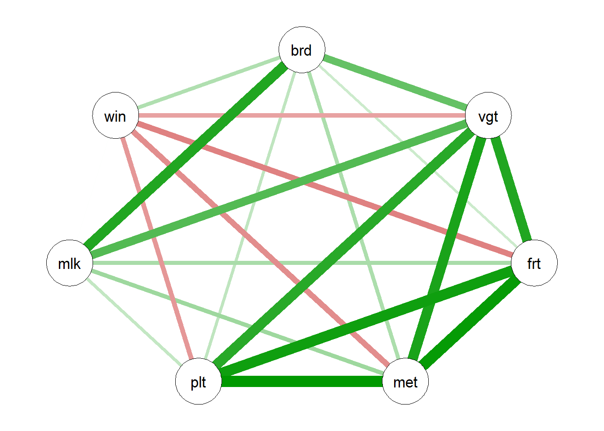
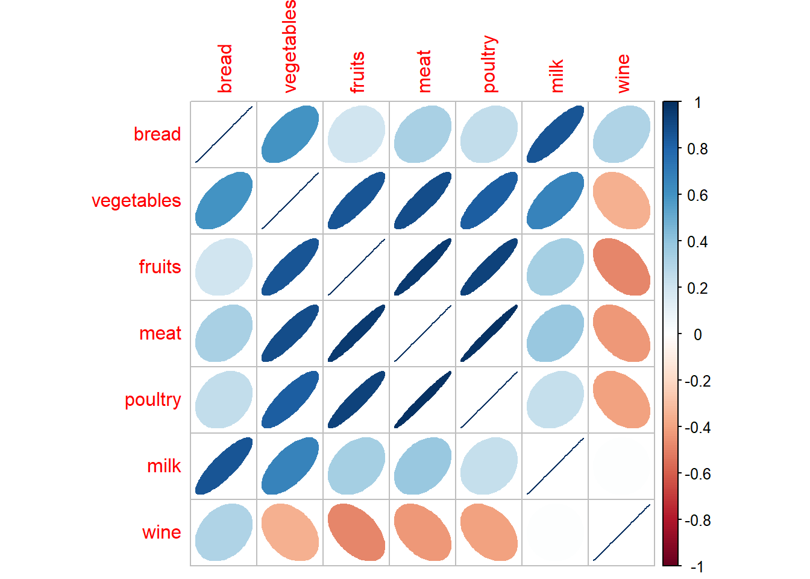
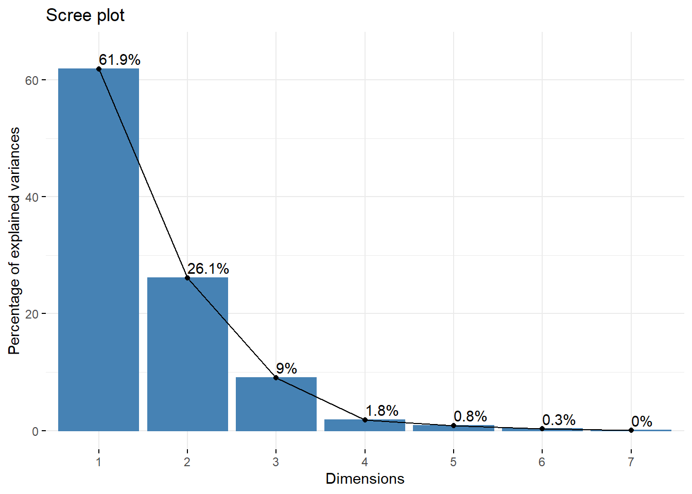
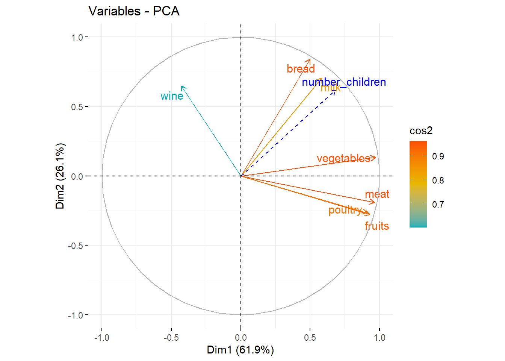
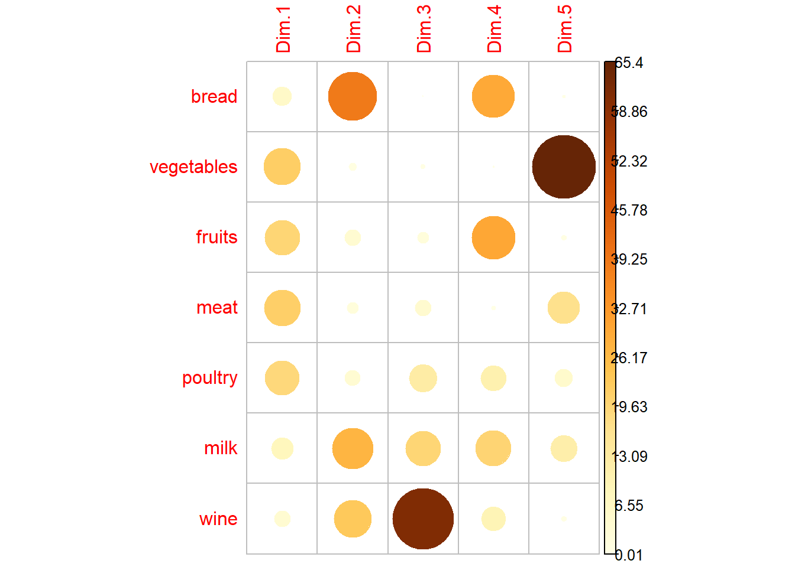
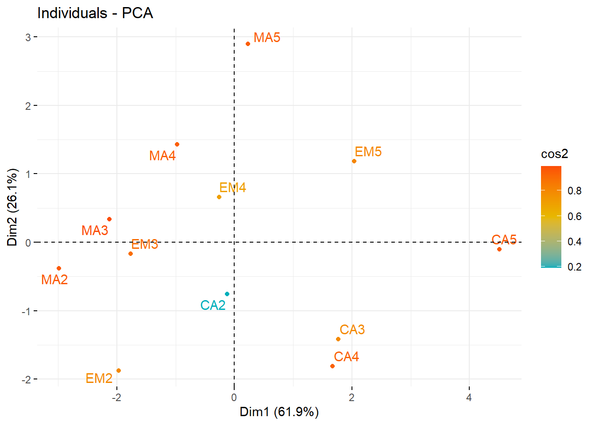
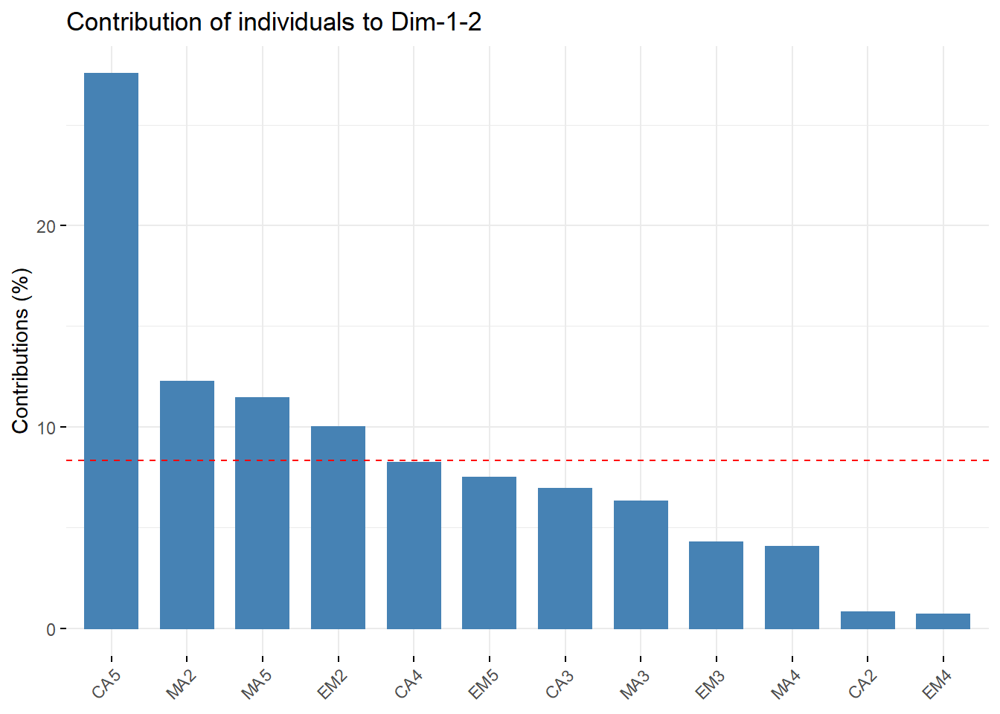
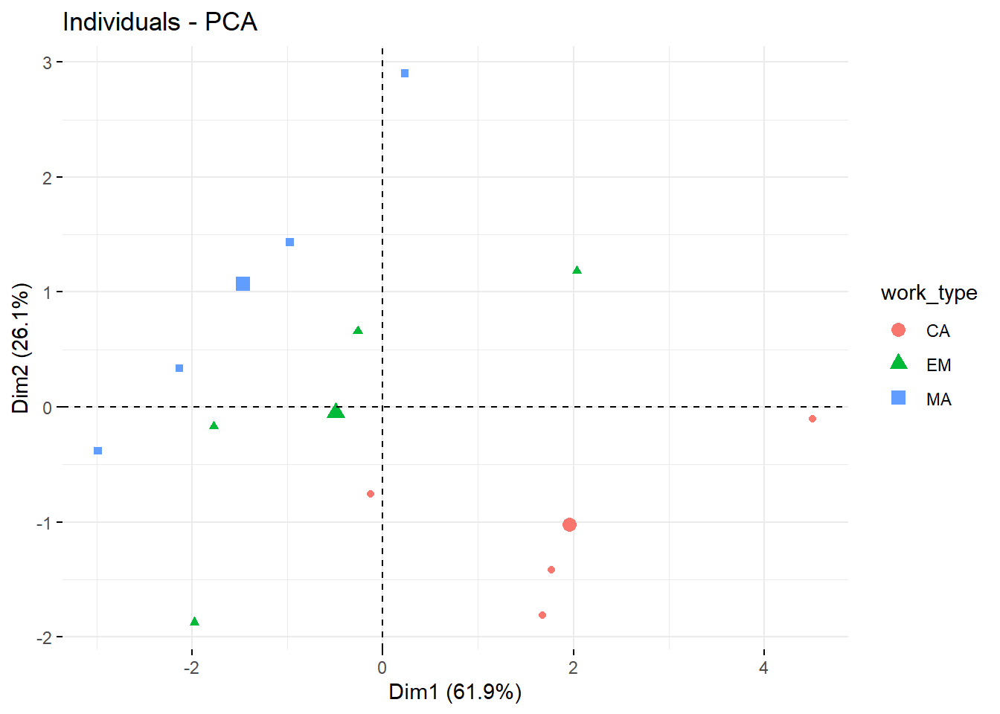
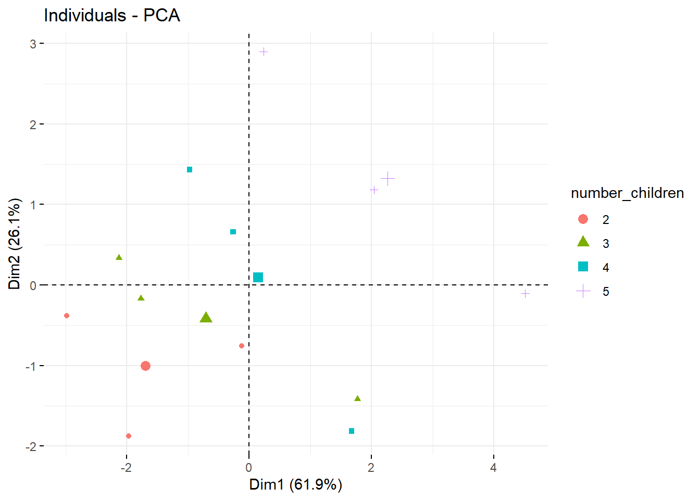

Import Data and pacakge
#install.packages(pkgs="http://www.karlin.mff.cuni.cz/~hlavka/sms2/SMSdata_1.0.tar.gz", repos=NULL, type="source")
library(SMSdata)
data(food)
library("FactoMineR")## Warning: le package 'FactoMineR' a été compilé avec la version R 4.1.3library("factoextra")## Warning: le package 'factoextra' a été compilé avec la version R 4.1.3## Le chargement a nécessité le package : ggplot2## Welcome! Want to learn more? See two factoextra-related books at https://goo.gl/ve3WBalibrary("qgraph")## Warning: le package 'qgraph' a été compilé avec la version R 4.1.3library(corrplot)## corrplot 0.92 loadedlibrary(tidyverse)## Warning: le package 'tidyverse' a été compilé avec la version R 4.1.3## -- Attaching packages --------------------------------------- tidyverse 1.3.1 --## v tibble 3.1.6 v dplyr 1.0.8
## v tidyr 1.2.0 v stringr 1.4.0
## v readr 2.1.2 v forcats 0.5.1
## v purrr 0.3.4## Warning: le package 'readr' a été compilé avec la version R 4.1.3## Warning: le package 'forcats' a été compilé avec la version R 4.1.3## -- Conflicts ------------------------------------------ tidyverse_conflicts() --
## x dplyr::filter() masks stats::filter()
## x dplyr::lag() masks stats::lag()The objective of this assignment is to perform a PCA on data. PCA is used to describe a dataset with many individuals and quantitative variables. The analysis extracts the relevant information and summarises it in the form of principal components, new axes to describe the dataset.
\(\huge{First \ \ step :\ Explain \ data}\)
The data set consists of the average expenditures on food for several different types of families in France (manual workers = MA, employees = EM, managers = CA) with different numbers of children (2,3,4 or 5 children).
We can create two illustrative variables. Works and numbers of children.
food$work_type<-str_sub(row.names(food), 1, 2)
food$number_children<-as.numeric(str_sub(row.names(food), 3, 3))\(\huge{Second \ \ step : Analyse \ the \ link \ between \ variables.}\)
PCA variable :
qgraph(cor(food[,1:7]))
corrplot(cor(food[,1:7]), method="ellipse") We note a large 4-variable relationship :
Vegetables
Fruits
Meat
Poultry
Other link :
PCA variable vs type of job :
list_var<-colnames(food)[1:7]
pval_list <-rep(NA,7)
for(i in 1:7){
pval_list[i]<-round(summary(aov(food[,i] ~ food$work_type))[[1]][1,5],4)
}
(TAB<-cbind(list_var,pval_list))## list_var pval_list
## [1,] "bread" "0.7619"
## [2,] "vegetables" "0.1276"
## [3,] "fruits" "0.0028"
## [4,] "meat" "0.0059"
## [5,] "poultry" "0.0011"
## [6,] "milk" "0.9125"
## [7,] "wine" "0.0842"fruits, meat, poultry and Wine-consomation have a link with the job.
PCA variable vs number of children :
list_var<-colnames(food)[1:7]
pval_list_2 <-rep(NA,7)
for(i in 1:7){
pval_list_2[i]<-round(summary(aov(food[,i] ~ food$number_children))[[1]][1,5],4)
}
(TAB<-cbind(list_var,pval_list_2))## list_var pval_list_2
## [1,] "bread" "2e-04"
## [2,] "vegetables" "0.0089"
## [3,] "fruits" "0.1943"
## [4,] "meat" "0.0785"
## [5,] "poultry" "0.1735"
## [6,] "milk" "0"
## [7,] "wine" "0.8763"bread, vegetables and milk have a link with number of children.
\(\huge{Second \ \ step :\ PCA \ Realisation}\)
res<-PCA(food, scale.unit = TRUE, ncp = 5,
quanti.sup = 9, quali.sup = 8, graph = F)Quality of representation of axes.
fviz_eig(res, addlabels = TRUE, ylim = c(0, 65))
(eig.val <- round(get_eigenvalue(res),1))## eigenvalue variance.percent cumulative.variance.percent
## Dim.1 4.3 61.9 61.9
## Dim.2 1.8 26.1 88.1
## Dim.3 0.6 9.0 97.1
## Dim.4 0.1 1.8 98.9
## Dim.5 0.1 0.8 99.7
## Dim.6 0.0 0.3 100.0
## Dim.7 0.0 0.0 100.088.1% of information is present in the two first factorial axes.
var <- get_pca_var(res)Variable graph :
fviz_pca_var(res, col.var = "cos2",
gradient.cols = c("#00AFBB", "#E7B800", "#FC4E07"),
repel = TRUE
)
What does each axis represent?
corrplot(var$contrib, is.corr=FALSE)
# Coordonnee
round(var$coord[,1:2],3)## Dim.1 Dim.2
## bread 0.499 0.842
## vegetables 0.970 0.133
## fruits 0.929 -0.278
## meat 0.962 -0.191
## poultry 0.911 -0.266
## milk 0.584 0.707
## wine -0.428 0.6481st axis : it represents vegetables, fruits, meat and poultry positively. The people on the right side of the graph of individuals are people consuming a lot of these products.
2nd axis : This axis represents the variables milk vine and bread.Individuals at the top of the individual graph consume more than the average of these products.
# Cos2:répresentation quality
round(var$cos2[,1:2],3)## Dim.1 Dim.2
## bread 0.249 0.708
## vegetables 0.940 0.018
## fruits 0.863 0.077
## meat 0.926 0.037
## poultry 0.830 0.071
## milk 0.341 0.500
## wine 0.183 0.420We note the bad represenation of the wine variable. It is preferable not to interpret this variable for the rest of the analysis
Graph of individuals
ind <- get_pca_ind(res)quality and contribution
fviz_pca_ind(res, col.ind = "cos2",
gradient.cols = c("#00AFBB", "#E7B800", "#FC4E07"),
repel = TRUE # Avoid text overlapping (slow if many points)
)
All individuals seem to be well represented on these first two axes.With the exception of CA2.
# Total contribution on PC1 and PC2
fviz_contrib(res, choice = "ind", axes = 1:2) This graph shows us that the individual “CA5” contributes more than 39% to the creation of the first two axes.
Moreover, “CA2” and “EM4” contribute less than 3% to this creation.
fviz_pca_ind(res, label="none", habillage=8)
fviz_pca_ind(res, label="none", habillage=9) We notice that the groups seem to form lines.
For the graph highlighting the type of work, we can see that the line formed by the “MA” points is further to the left than the “CA” points.
For the graph showing the number of children in colour, the lines are present but in the other direction.
The more children the family has, the further to the top right they are for the same type of occupation. This seems to be correct, as the top right corner means that all products except wine are consumed more than the average.
With the same number of children, families with a manual trade (MA) seem to consume more wine.